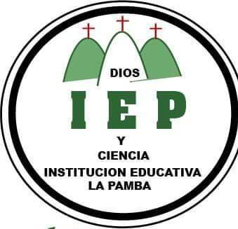

Institucion Educativa La Pamba
Bachiller Académico
Estudie mi primaria y bachilletaro en la Intitución educativa la pamba, donde logre culminar con exitos y honores mis estudios obtuviendo el titulo de Bachiller Académico en el año 2012.